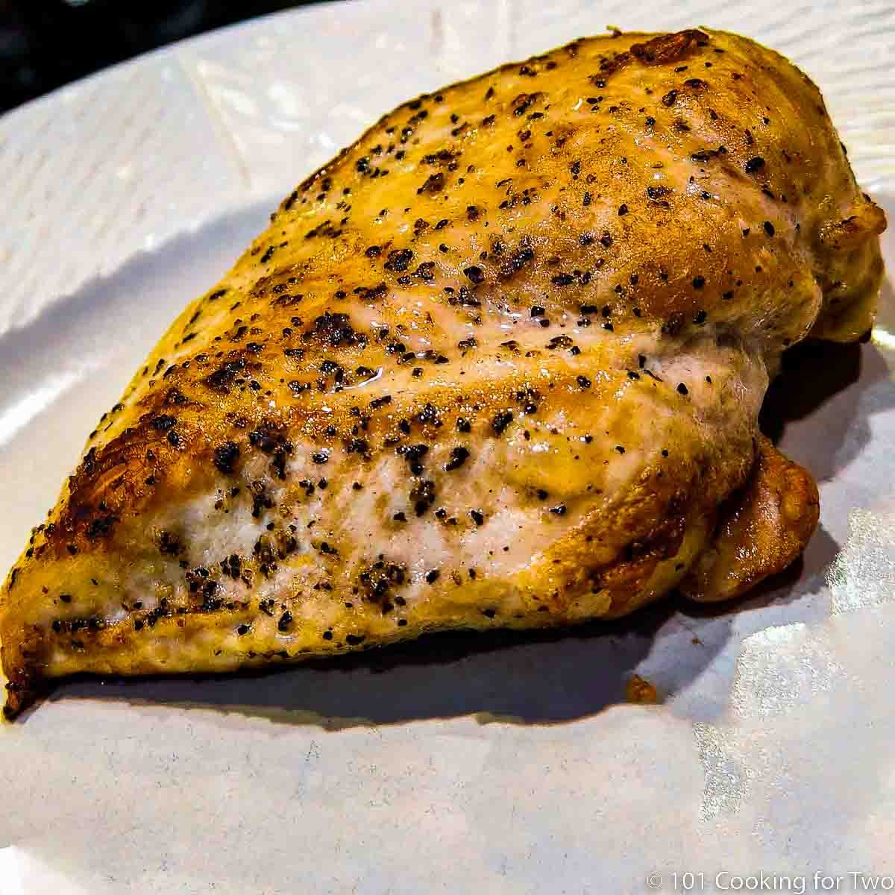

Pan Seared Oven Baked Chicken Breast

Pan Seared Oven Baked Chicken Breast
This is how we cooked for many years. We had a freezer in the garage fridge for meat only. I would take out a couple of chicken breasts, a pork tenderloin, and some steaks, let them thaw in the refrigerator for a few days and work our way through them.
I would get home late from work. But we want a nice dinner on a short timeline. I spend 5-10 minutes of preparation time and usually finish in the oven as I'm unwinding, and in 15-20 minutes, dinner was ready.
Ingredients
- Chicken Breast - Fresh preferred
- Seasoning - salt, black pepper, garlic powder
- Optional Seasoning - marinades, thyme, rosemary or other herbs and spices
How To Cook A Pan Seared Oven Baked Chicken - Step-by-step
- Preheat the oven to 375° convection or 400° conventional.
- Trim and pat dry the chicken. If the chicken breast is over ¾ inches thick, flatten it with a meat mallet or the bottom of a heavy pan.
- Heat oil in an oven-safe pan (cast iron preferred) over medium-high heat.
- Sprinkle lightly with salt and pepper or the seasoning of your choice.
- When the oil is hot and shimmering, carefully lay the chicken breasts in the hot pan. Brown both sides for 3-4 minutes each—to almost the color you want when eating.
- Bake for 15-20 minutes until an internal temperature of 165°. The thinner breast will be for 15 minutes, and the bigger ones for about 20 minutes.
- Let rest for 5 minutes before serving.